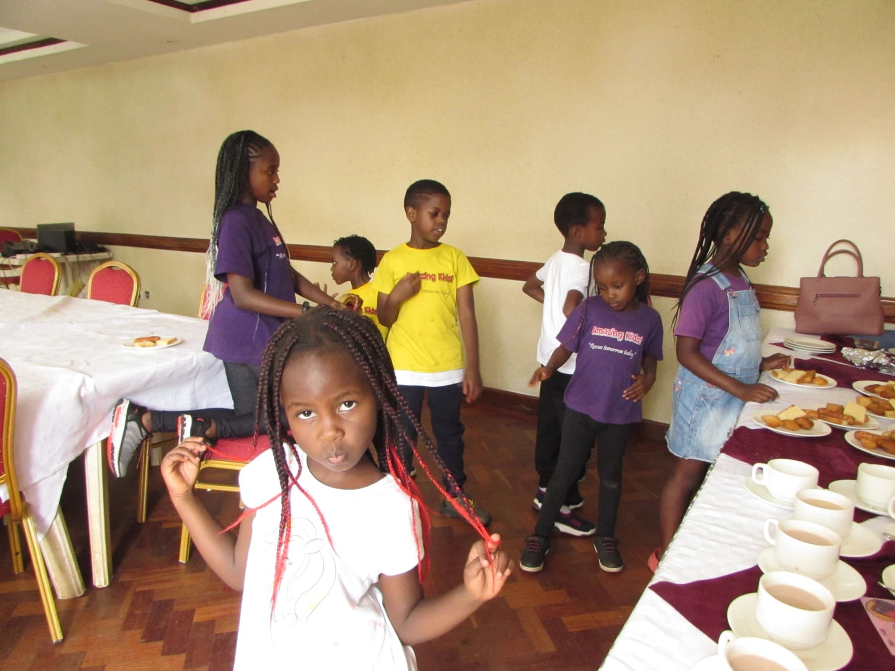
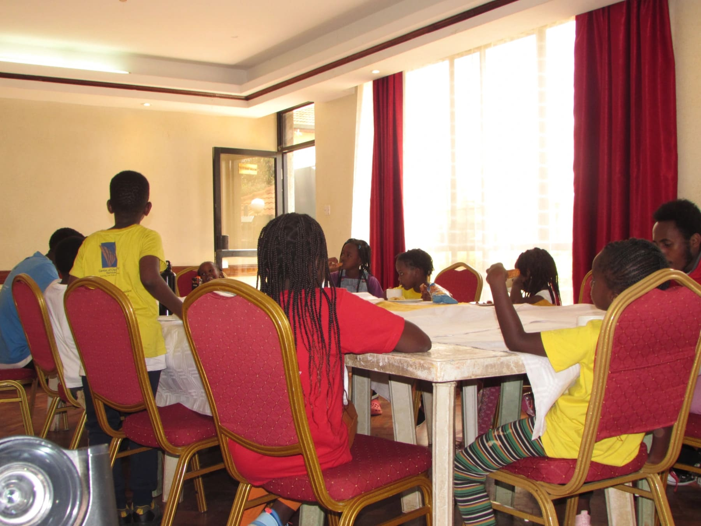
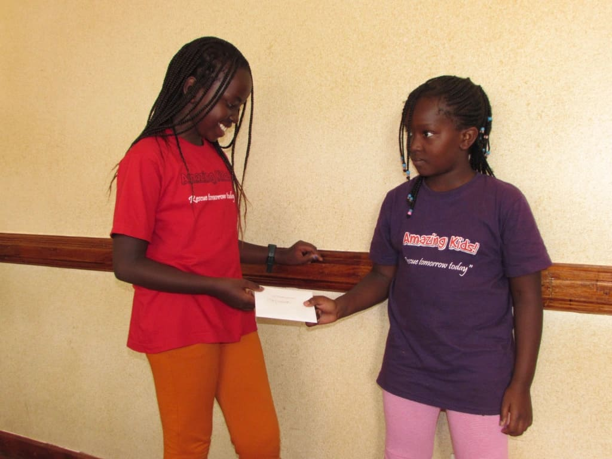
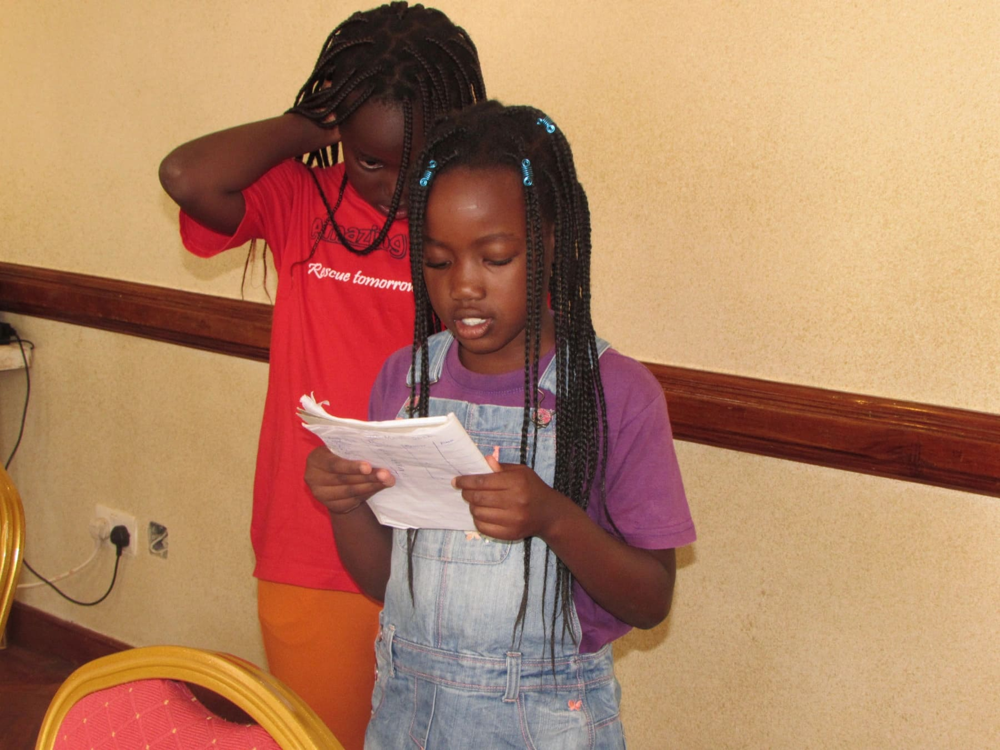

Hello there. Nice seeing you here again. Put on your reading glasses, sit back and let us take you through the 2nd of April.
We arrived in the morning, said hi to our friends and teachers and were ready for the day.
We started with the devotion where we learnt about Lydia. We learnt how she was a successful business woman who sold expensive purple cloth in Philippi, Macedonia. She loved God very much. In fact, every evening she met up with some fellow women to pray to God together. All Lydia wanted was to attain things that were of eternal value. God answered her prayers and sent Paul, Silas, Luke and Timothy who were preaching across the sea from where she lived. She got baptized and invited the guys to her home to learn more about Jesus Christ. From this story we learnt that it is of high importance to seek God and things of eternal value as we live here on earth.
The dance was here to wow and energize us for the morning. We carried on learning the dance song for the season and did some pretty cool gymnastic exercises just to spice things up a little bit.
In the lesson, we did a recap of all the lessons we had undertaken since opening in January. We did this in preparation of a video shoot showcasing what we had achieved and learnt so far. Here’s a small snippet. The full version will be coming out soon on YouTube!
We carried on with the energy we got from the dance to the playground as we had fun doing some acrobatics and gymnastic moves in the field.
Tea time was here with us. We took our snacks in style.
then joined our friends for a little bonding time.
Project Time! We started on a new project namely, Project Kites. This was the first day of the project. Soon to be an amazing outcome. We believe it because we are the Amazing Kids and we believe we can do all things through Christ who strengthens us.
In our award-giving session, this beautiful girl was gifted an award for achieving the silver badge a.k.a. 30 Amazing Kids good behavior marbles. Hongera sana!
We were up and ready for presentations, I hope you too can you tell! Our confidence levels were gradually improving; we were so proud of ourselves.
Of course, the Sherriff got the chance to give her remarks on our behavior during the day then went ahead to read out our marble counts. Hopefully someone wins the silver badge again next week. Guess you'll have to peek in next week to discover if someone did. Yes! We just got that ka-feeling someone will.
What a day! We prayed and departed for home having had a very fun and fruitful day.